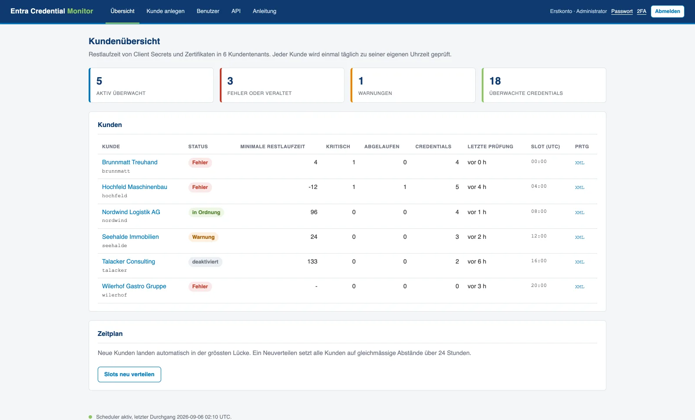
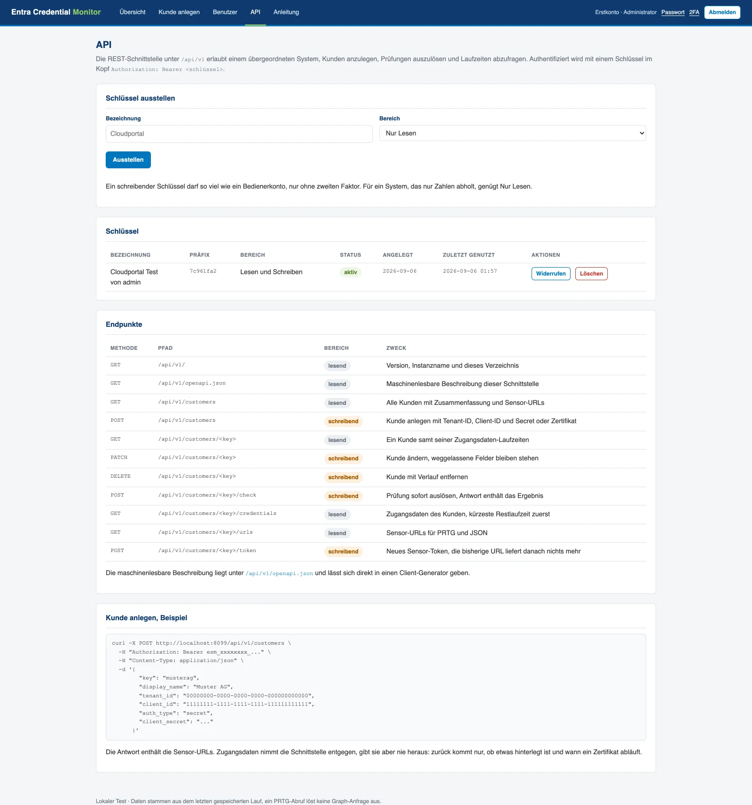

This watches the client secrets and certificates of your Entra ID app registrations and reports how many days each one has left, as PRTG XML, JSON and a small web page. One container, read-only, every tenant you look after.
A secret quietly reaches its last day and the thing it powered stops: directory sync, a backup job, a signing flow. The error you get points at the symptom, never at the credential.
is the longest life Entra grants a client secret. Certificates last longer, which only means the surprise arrives later.
Microsoft sends a digest to the app owner. Owners leave, shared mailboxes get filtered, and nobody notices the gap.
The portal shows one directory at a time. Looking after twelve customers means twelve logins and no shared view.

Point an HTTP Data Advanced sensor at the endpoint and you get one channel per application plus three summary channels, with the warning and error limits already set. No script, no scheduled task, no return-code parsing.
<!-- /prtg/<token> --> <prtg> <result> <channel>Minimale Restlaufzeit</channel> <value>4</value> <customunit>Tage</customunit> <limitminwarning>30</limitminwarning> <limitminerror>14</limitminerror> </result> <!-- one channel per application --> </prtg>
Thresholds are per request, so one tenant can feed several sensors: the self-renewing Entra Connect certificate on a short threshold of its own, everything else on the normal one.
Both ship from the same repository and share the same Graph logic, so a sensor keeps its channel names and history when you move between them. Pick by whether you want one place that holds every customer, or nothing to host at all.
Adds what a managed service provider needs: accounts with mandatory two-factor, encrypted credential storage and one scan per customer per day spread over 24 hours.
docker compose -f docker-compose.portal.yml up -d
A PowerShell sensor that runs on the PRTG probe itself. Windows PowerShell 5.1, no modules, outbound 443 only. Right for a customer where nothing may be hosted.
prtg\Get-EntraSecretExpiry.ps1

If you already run a customer portal, onboarding twice is work nobody asked for.
The portal exposes /api/v1 so your system creates the customer,
triggers the scan, reads the remaining lifetimes and hands out the sensor URL,
all without anyone opening this UI.
| Method | Path | Scope | What it does |
|---|---|---|---|
| GET | /customers | read | Every customer with its summary |
| POST | /customers | write | Create one, with tenant id, client id and secret |
| PATCH | /customers/<key> | write | Change it, omitted fields stay put |
| POST | /customers/<key>/check | write | Scan now, the answer carries the result |
| GET | /customers/<key>/credentials | read | Its credentials, shortest runtime first |
| GET | /customers/<key>/urls | read | The sensor URLs to paste into PRTG |
| POST | /customers/<key>/token | write | New sensor token, the old URL goes quiet |
| GET | /openapi.json | read | Generated description, feed it to a client generator |
Issued in the portal by an administrator, shown once, stored as an Argon2 hash. Two scopes: read sees customers, credentials and URLs, write additionally creates, changes, scans and rotates. Revoking one takes effect on the next request, and every use is in the audit trail.
# create a customer curl -X POST https://portal/api/v1/customers \ -H "Authorization: Bearer esm_..." \ -H "Content-Type: application/json" \ -d '{"key":"musterag", "display_name":"Muster AG", "tenant_id":"...","client_id":"...", "client_secret":"..."}'

Application.Read.All, application-only, with admin consent. Metadata only.
Graph does not return secret values at all. Only names, dates and thumbprints leave the tenant.
No write permission is requested, so it cannot change anything in your directory even by mistake.
Runs as UID 10001, read-only root filesystem, no new privileges.
A client secret is the normal way and works in every tenant. Its expiry is what this watches. Certificates for tenants that restrict secrets.
465 tests covering aggregation, both renderers, the request path and the authentication flows.
The three walkthroughs an engineer actually needs: onboarding a customer tenant, wiring up the PRTG sensor, and driving the whole thing over the API.
One app registration, one container, and you know. MIT licensed, no account, nothing phones home.